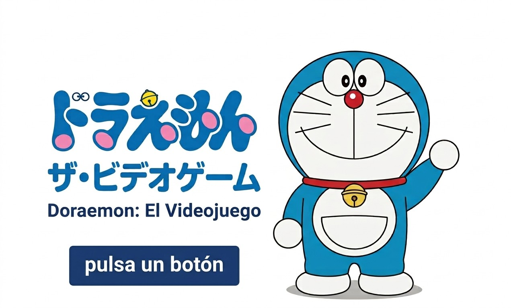
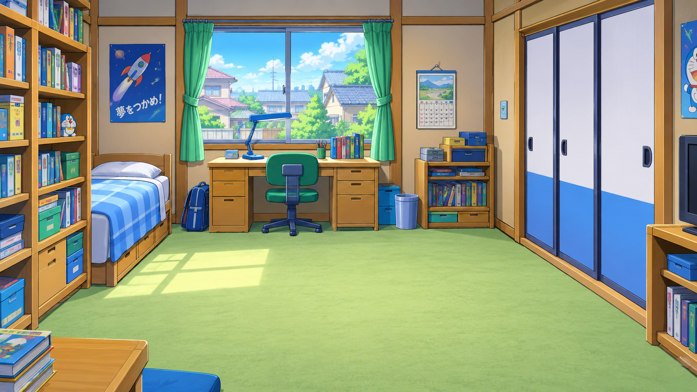
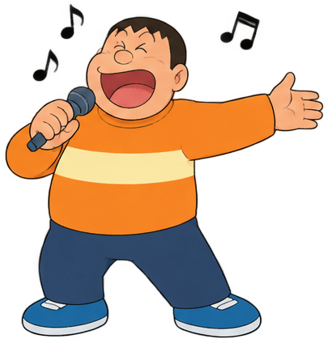

MOTOR DE MOVIMIENTO REPARADO · WASD / FLECHAS / CRUCETA

LA GRIETA DEL TIEMPO
Capítulo 1
Algo imposible ha ocurrido.
Gemas temporales: 0 / 3
LA GRIETA DEL TIEMPO · FINAL
Final

DORAEMON
♥♥♥♥♥
NV. 1
! OBJETIVOS
✦ Lee el cuaderno de Nobita
✦ Ayuda a Shizuka
✦ Ayuda a Suneo
✦ Recolecta 3 orbes
✦0/3
↑
VOLVER A LA CALLEVe hacia la flecha para salir del descampado
1.Sin objetos
?2.???
?3.???
????
WASD / Flechas Mover E / Espacio Hablar F Aire 1-3 Inventos
Objetivo Actual
Habla con Nobita para comenzar la búsqueda.
🔔
Doraemon
...
Pulsa [ESPACIO] o [E] para continuar
❤ ❤ ❤ ❤ ❤
¡Atraviesa la distorsión!
Pulsa ESPACIO para mantener la altura adecuada, pasar entre las distorsiones temporales y llegar hasta el violín sin chocar ni caerte.
¡RITMO DEL AIRE!DANCE · DIFICULTAD NORMAL
COMBO ×0

EFECTO DEL AIRE
0%
←
↓
↑
→
Pulsa ← ↓ ↑ → cuando las flechas lleguen a la línea luminosa
¡EFECTO DEL AIRE COMPLETADO!
¡Desafío del aire!
Pulsa las teclas de dirección ← ↓ ↑ → justo cuando las flechas lleguen a los círculos. Cada acierto genera efecto del aire para la Pistola de Aire y ayuda a parar el cante de Gian. ¡Encadena BIEN y PERFECTO para crear combos!
El reto de Cronos
Ordena la imagen para liberar a Nobita. Dificultad normal · 3×3.
Mueve las piezas hasta reconstruir la imagen.
Selecciona una pieza con clic o flechas. Pulsa ESPACIO para moverla al hueco si está contigua.